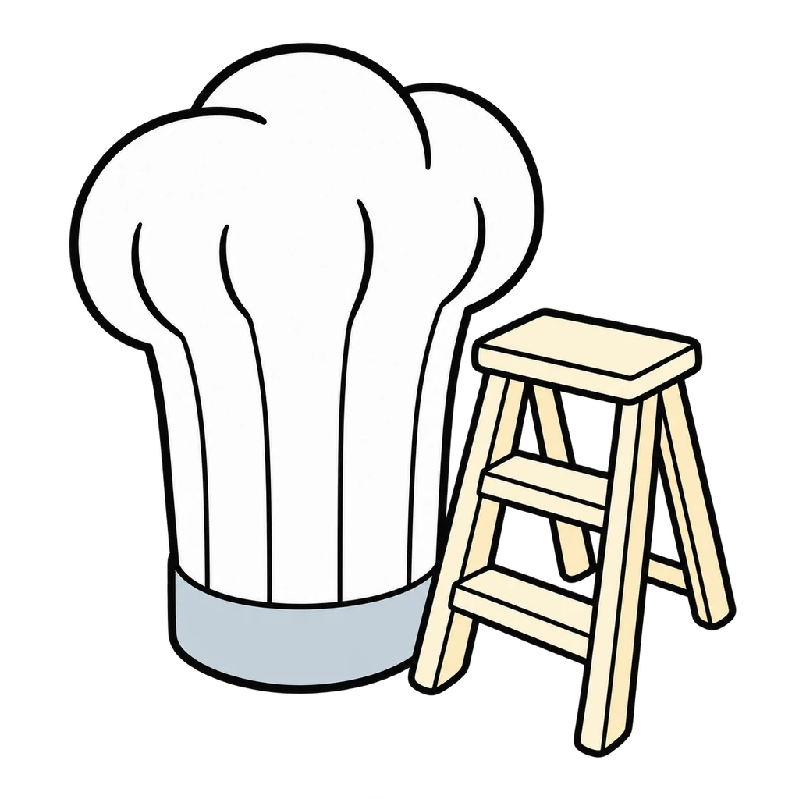
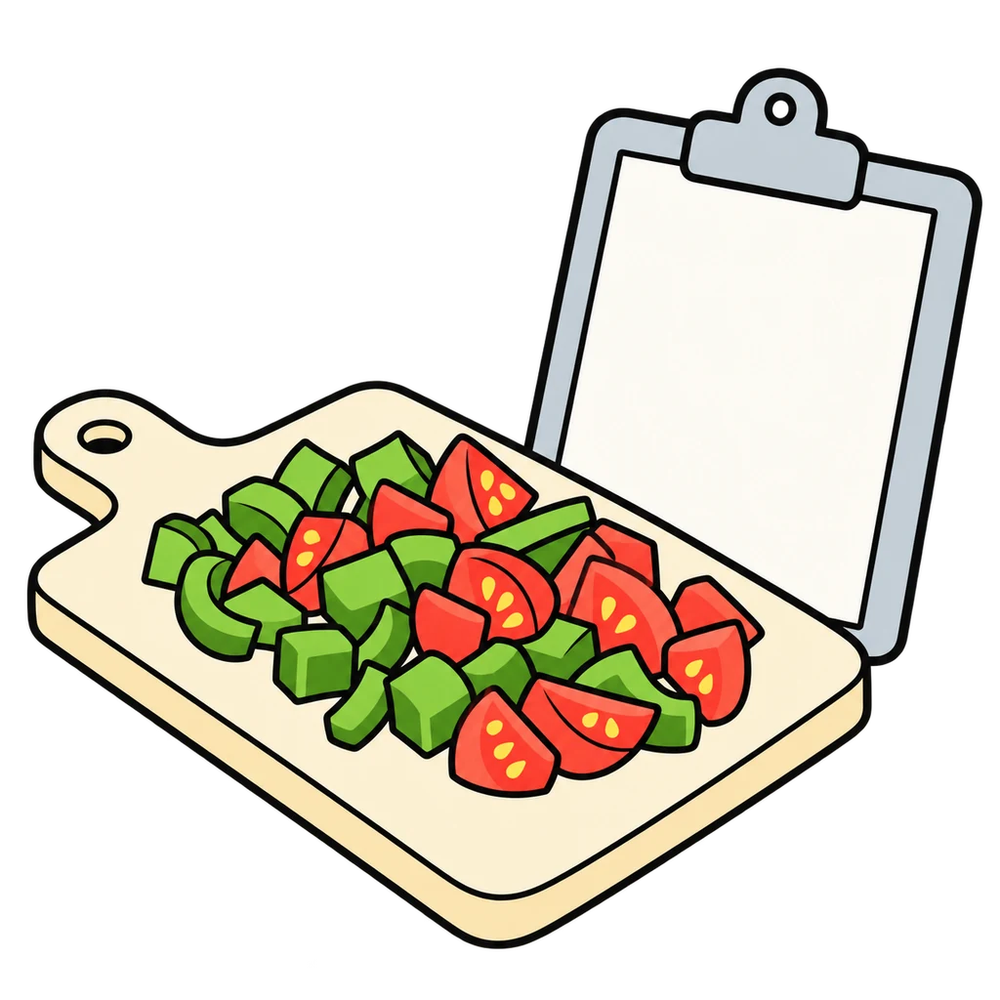
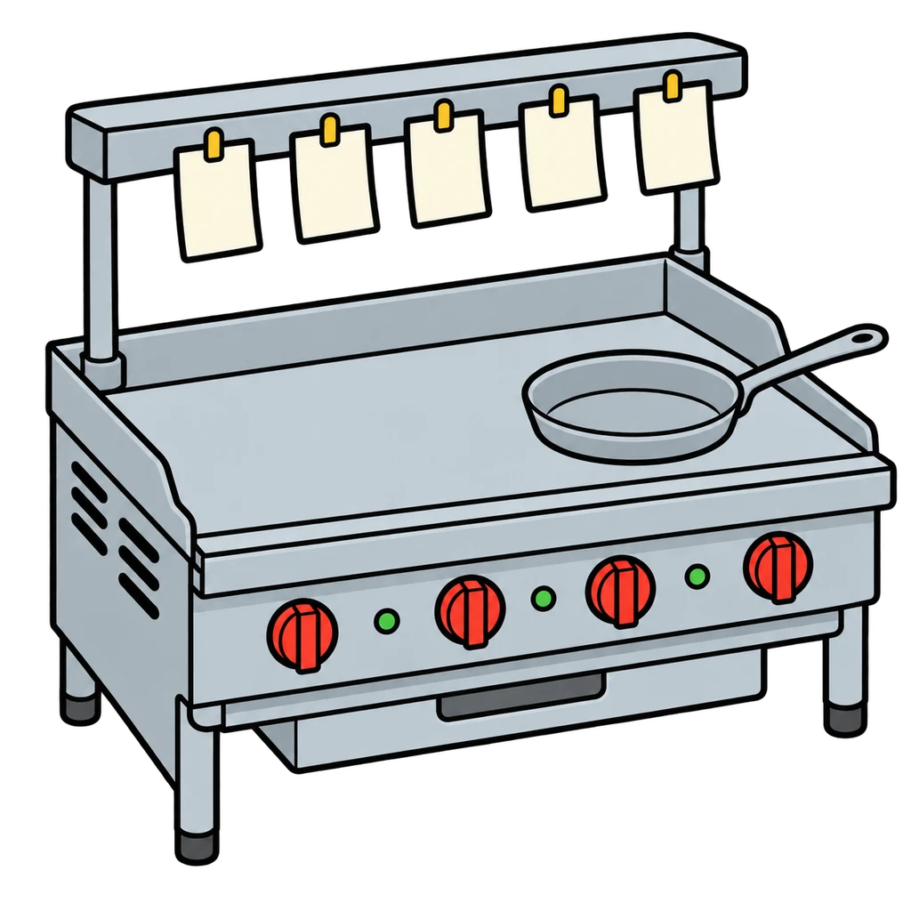
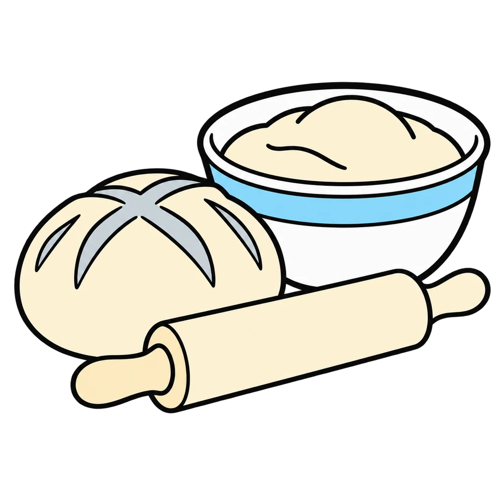
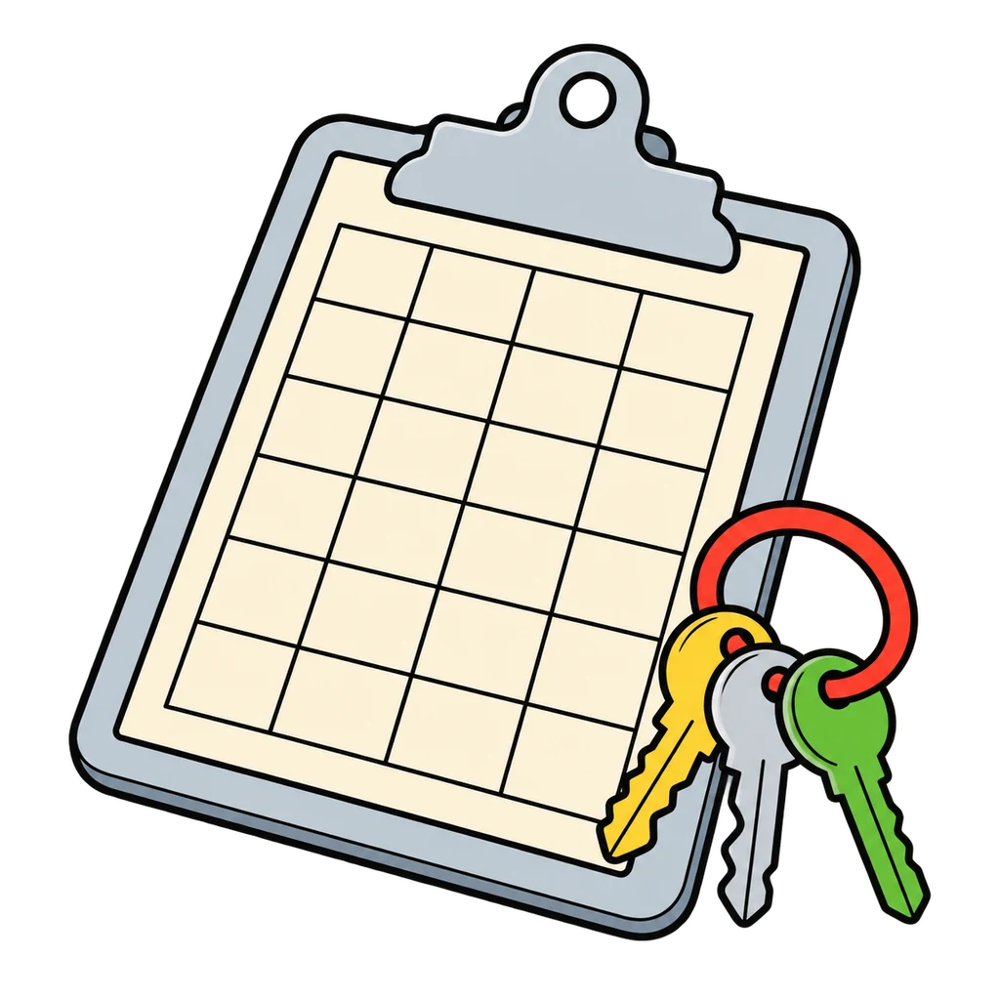
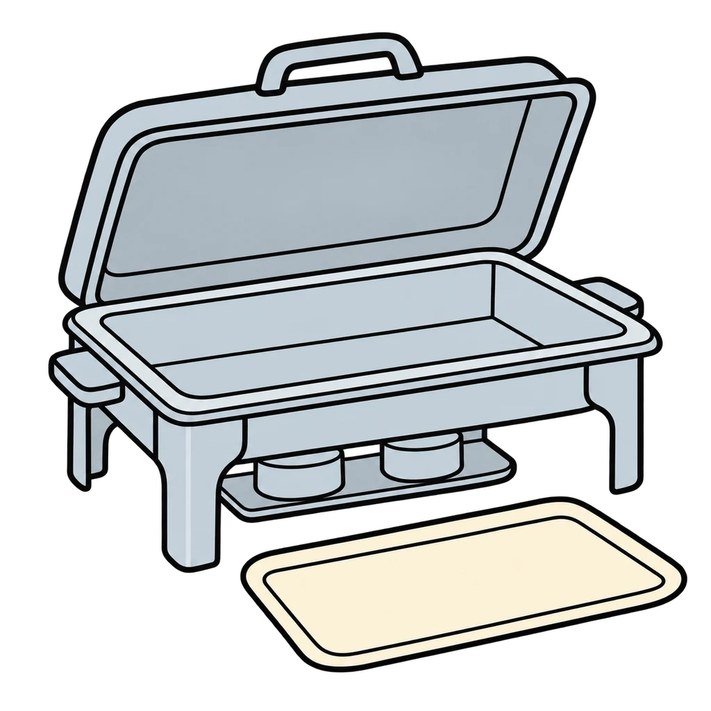
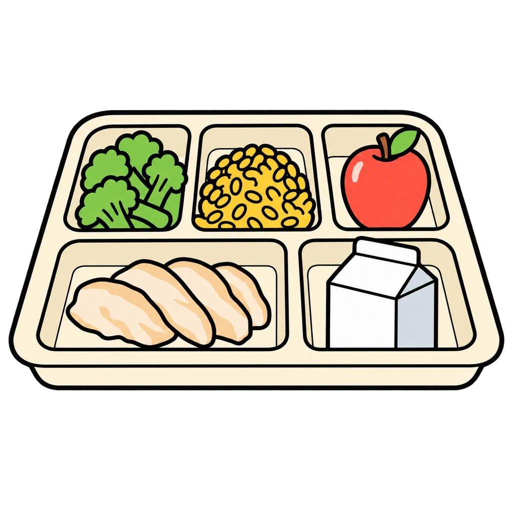
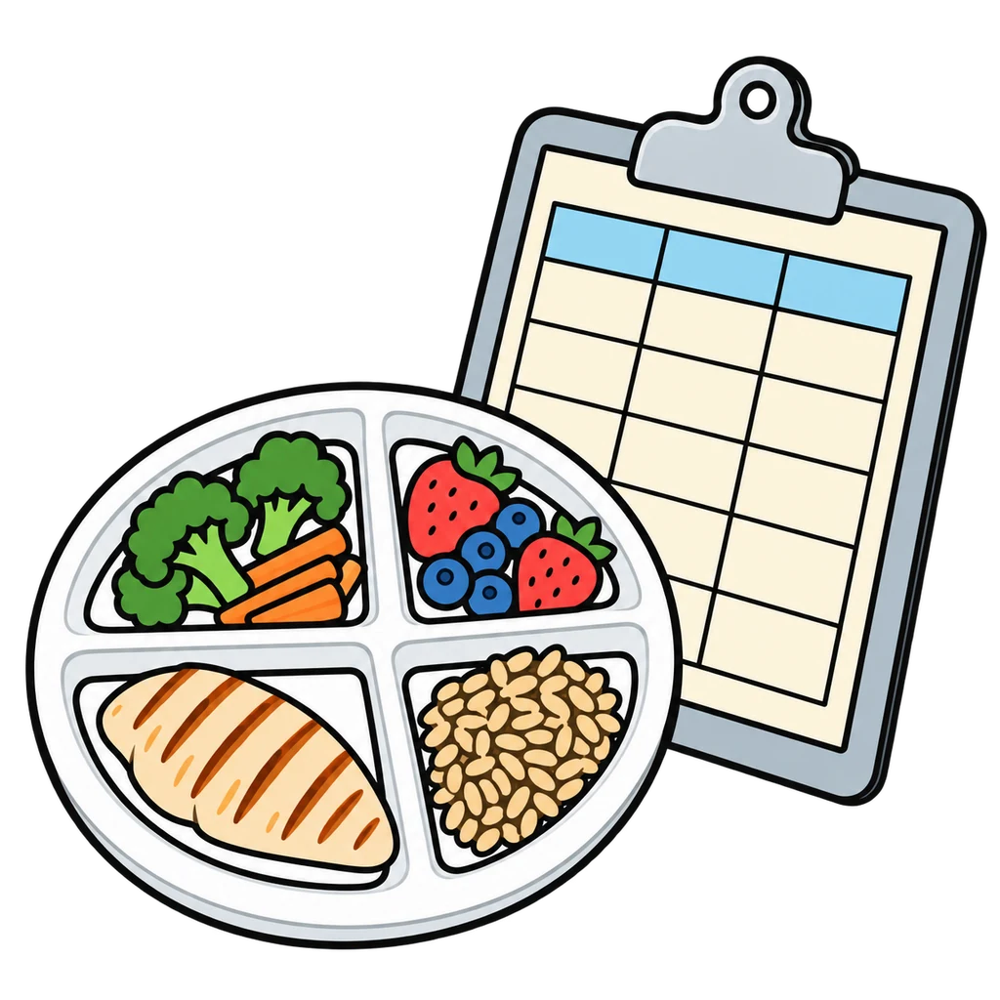
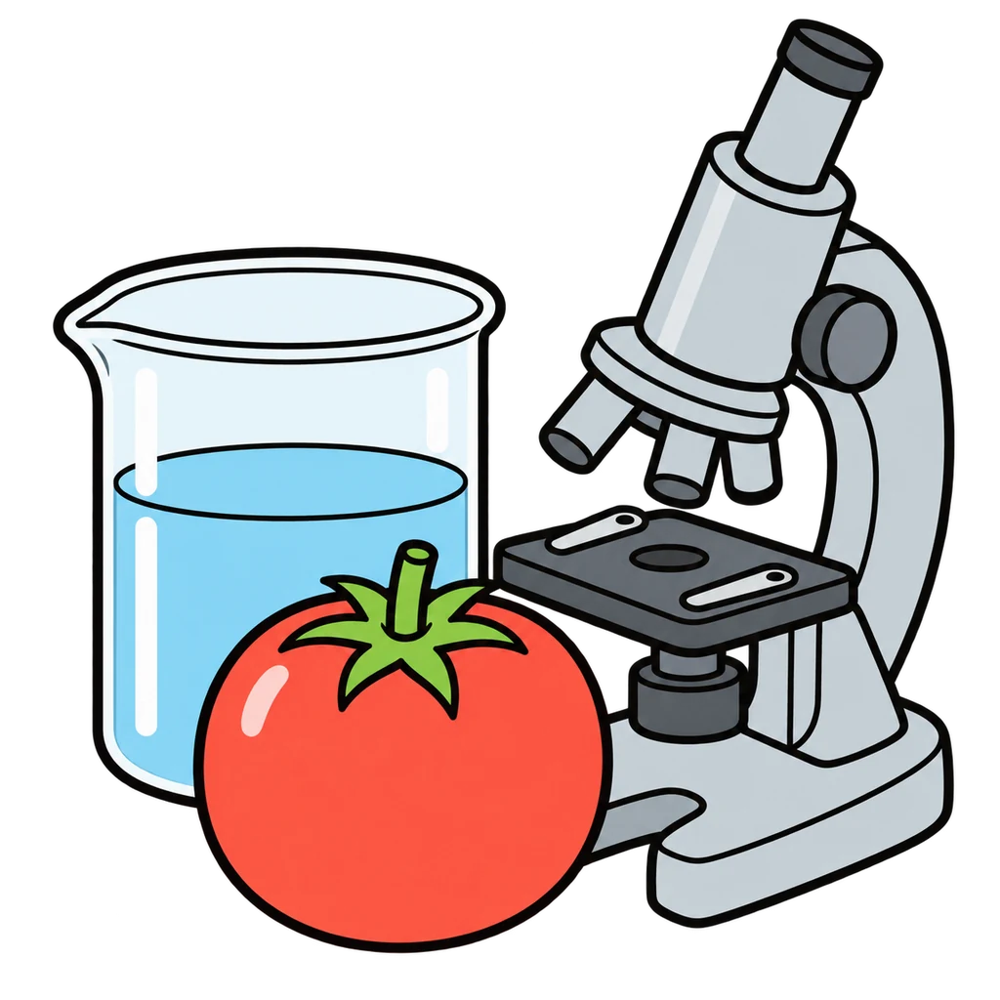
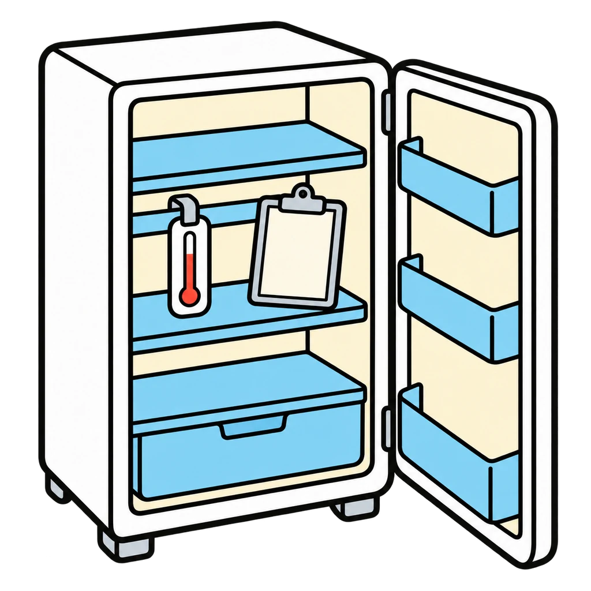

Reviews Lesson 1.22. Reviews the careers half of Lesson 1.22 (the ten career cards and Sort 1 by education). Use it right after the card sort as the three-minute check before the test is handed out, or as the Unit 2 Lesson 2.1 do now, where the self-check sheet comes back. Round 1 follows the key: line cook scores in A or B and restaurant manager scores in B or A, because the cards say both paths exist. Round 2 matches the day-in-the-life text to the career picture; the pay sort is not in the game because the pay ranges are to be refreshed before teaching. Grade 6 setting: use the six-card set (dishwasher, prep cook, line cook, baker, dietitian, health inspector) in both rounds. Grade 8 stretch (an eleventh card) stays on the handout.

Career Ladder
A career card appears. Tap the education bin it fits: none past high school, a certificate or two-year degree, or a four-year degree. Then a day-in-the-life line appears, and you tap the career.
How to play
- Most of the ladder is climbable from the bottom; a dishwasher who shows up becomes a prep cook, a prep cook who learns becomes a line cook, and a line cook with a certificate can run a kitchen. The dietitian and the food scientist take a degree; the health inspector takes a degree and a state exam.









Done
The ones to study:
Worth knowing by heart:
- The ten careers and the education each needs
- Three groups: none past high school; a certificate, an apprenticeship, or a two-year degree; a four-year degree or more
- A day in the life for each card
- Pay ranges are on the cards and are to be refreshed before teaching; the game does not test them